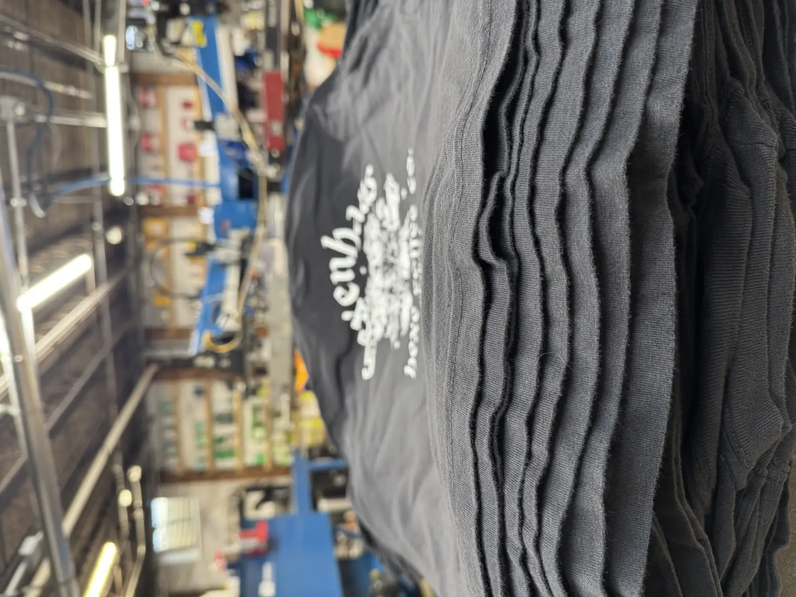

Photo-real prints, wild gradients, and small runs with zero screen fees. Our Premium Film Print process (DTF) is how orders under 24 pieces get big-shop quality without big-run pricing. Pressed in-house in Warrenville, serving all of Chicagoland.

DTF stands for direct-to-film. Your art prints in full color onto a transfer film, then we heat-press it onto the garment. No screens to burn means no setup fees, and full-color printing means gradients, photographs, and fine detail come out exactly like the art.

DTF isn't better than screen printing. It's better for different jobs. Small quantities, complex full-color art, and mixed garment orders lean DTF. Bigger runs with bold spot-color art lean screen printing, where per-piece pricing drops fast.
We run both in the same shop, so we have no reason to push you to the wrong one. Send the art and the count, and we'll quote the method that actually serves your job. The full breakdown is in our guide to screen printing vs. DTF vs. embroidery.
Tell us the garment, the count, and send the art. A real person quotes your DTF job fast, with no screen fees and no minimums.